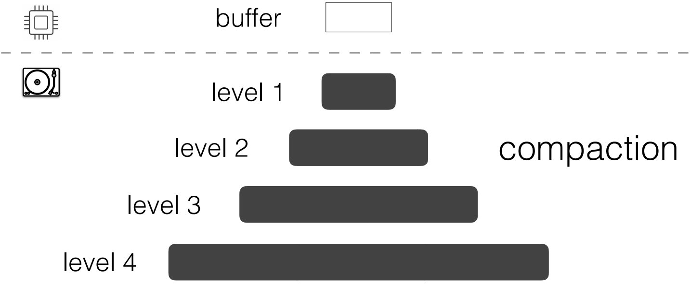
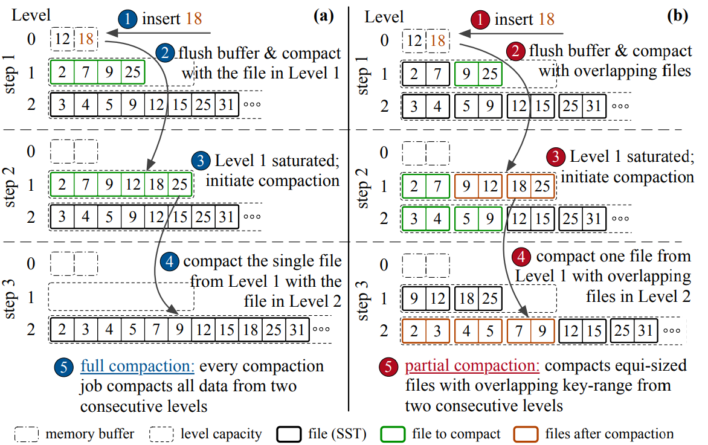

Compactionary is a dictionary for Log-structured merge (LSM)
compactions, that helps to visualize the implications of compactions
on performance for different workloads and LSM tunings. LSM trees offer efficient ingestion by appending incoming data, and thus, are widely used as the storage layer of production NoSQL data stores.
To enable competitive read performance, LSM-trees periodically re-organize data to form a tree with levels of exponentially increasing capacity, through iterative compactions.
However, the LSM compaction design space is vast, largely unexplored, and has not been formally defined in the literature.
Compactionary is a dictionary for Log-structured merge (LSM)
compactions, that helps to visualize the implications of compactions
on performance for different workloads and LSM tunings. LSM trees offer efficient ingestion by appending incoming data, and thus, are widely used as the storage layer of production NoSQL data stores.
To enable competitive read performance, LSM-trees periodically re-organize data to form a tree with levels of exponentially increasing capacity, through iterative compactions.
However, the LSM compaction design space is vast, largely unexplored, and has not been formally defined in the literature.
In this demo, we present the design space of LSM-compactions, and animate the compaction process for various compaction strategies . Audiences are able to see how each compaction strategy behaves for a certain workload and compare their performance in terms of different metrics. Users can also create their own compaction policy with specifying the number of tiering levels and the number of leveling levels.
 LSM-trees buffer incoming inserts, updates, and deletes (i.e., ingestion, in general) within main memory. Once the memory buffer becomes full, the entries contained are sorted on the key and the buffer is flushed to the disk-component of the tree. For an LSM-tree with L levels, we assume that its first level (Level 0) is an in-memory buffer and the remaining levels (Level 1 to L − 1) are disk-resident. On disk, each Level i (i > 1) has a capacity that is larger than that of Level i − 1 by a factor of T , where T is the size ratio of the tree.
 Classically, LSM-trees support two merging policies: leveling and tiering. In leveling, each level may have at most one run, and every time a run in Level i − 1 (i ≥ 1) is moved to Level i, it is greedily sort-merged with the run from Level i, if it exists. With tiering, every level must accumulate T runs before they are sort-merged. Recently hybrid compaction policies (e.g., the hybrid compaction as follows) fuse leveling and tiering in a single tree to strike a balance between the read and write throughput based on workload specifications. To amortize data movement, and thus, avoid latency spikes, state-of-the-art LSM-engines organize data into smaller files, and perform compactions at the granularity of files instead of levels (Partial Compaction). If Level i grows beyond a threshold, a compaction is triggered and one file (or a subset of files) from Level i is chosen to be compacted with files from Level i + 1 that have an overlapping key-range. This process is known as partial compaction.